From Founder's Desk
Insights & Strategy from Mangesh ZopeNo Insights Found
We couldn't find any articles matching your search terms. Try adjusting your keywords or filters.
Section 54F - Top class weapon to avoid LTCG
Fundamentally, section 54F allows you to knock off your LTCG in other asset classes like equity, mutual fund etc against purchase of the property. This can save you max of 1.25cr.
Can I Get a Loan to Buy a Plot of Land in India?
A senior tech professional in Bengaluru called us last quarter, mid-decision. He had identified a 2,400 sq ft plot in Bangalore's outskirts — well-located, in an approved layout, priced at ₹1.85 crore.
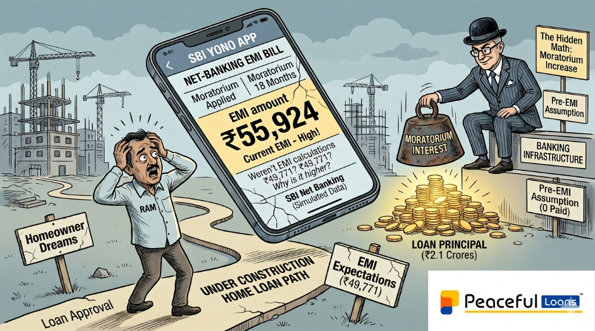
Not able to make sense of EMI number on net-banking for under construction home loan? Don’t worry you are not alone.
The EMI on your net banking app looks higher than your EMI calculator. Here's why — and no, the bank didn't sneak in an insurance...
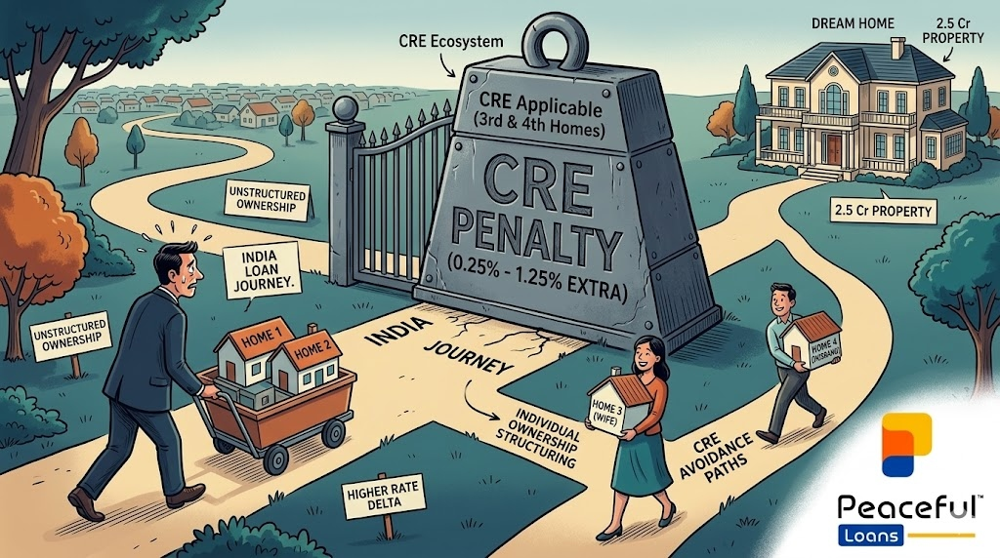
Buying your 3rd or 4th home? Your interest rate just got 0.25% to 1.25% higher.
Avoid the CRE penalty on your 3rd or 4th home. Most people find out too late that their interest rates are higher. Here is what is actually happening...
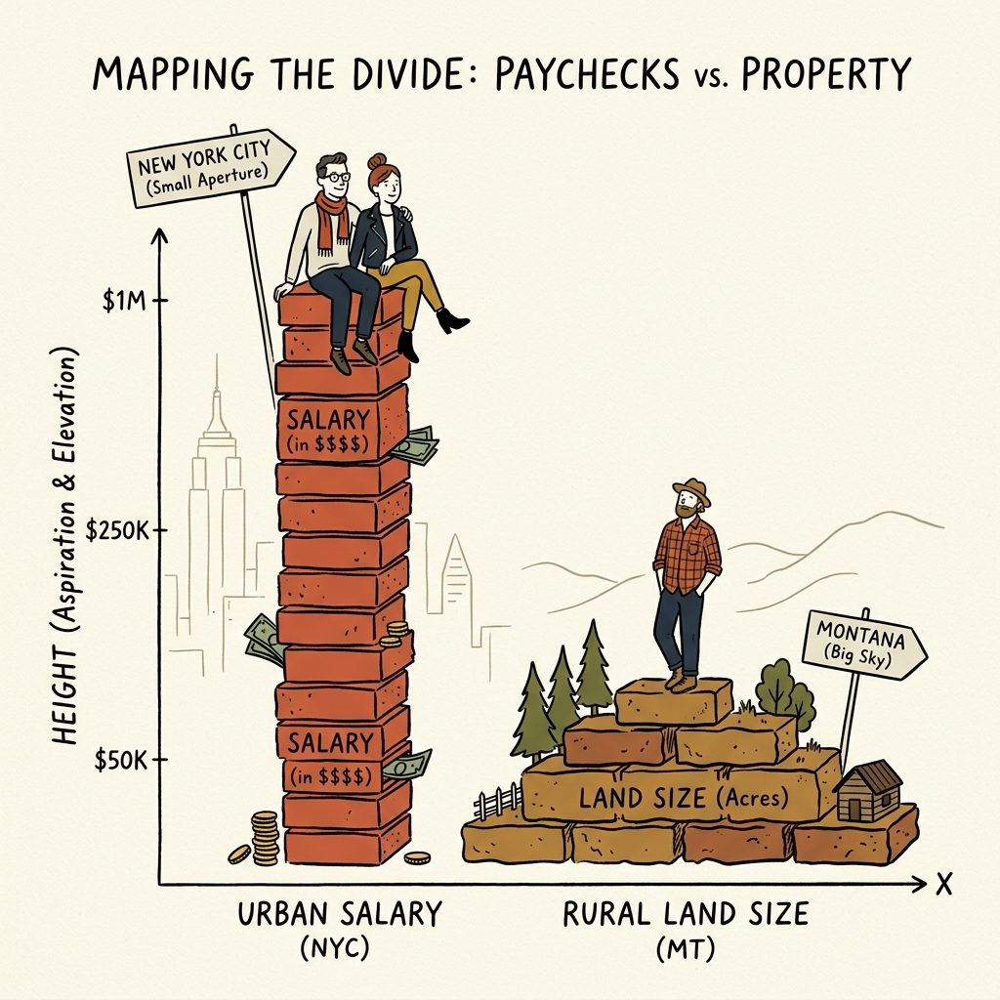
How Much Plot Loan Can I Get on My Salary?
A senior data scientist in Pune called us last quarter, planning a hometown plot purchase. He earned ₹3.2 lakh net per month, had clean CIBIL of 815, ...
Which Banks Offer the Best Plot Loans in India?
A senior consultant in Hyderabad called us last quarter, mid-research. He was planning a ₹1.65 crore plot purchase in Gachibowli. He had spent two wee...
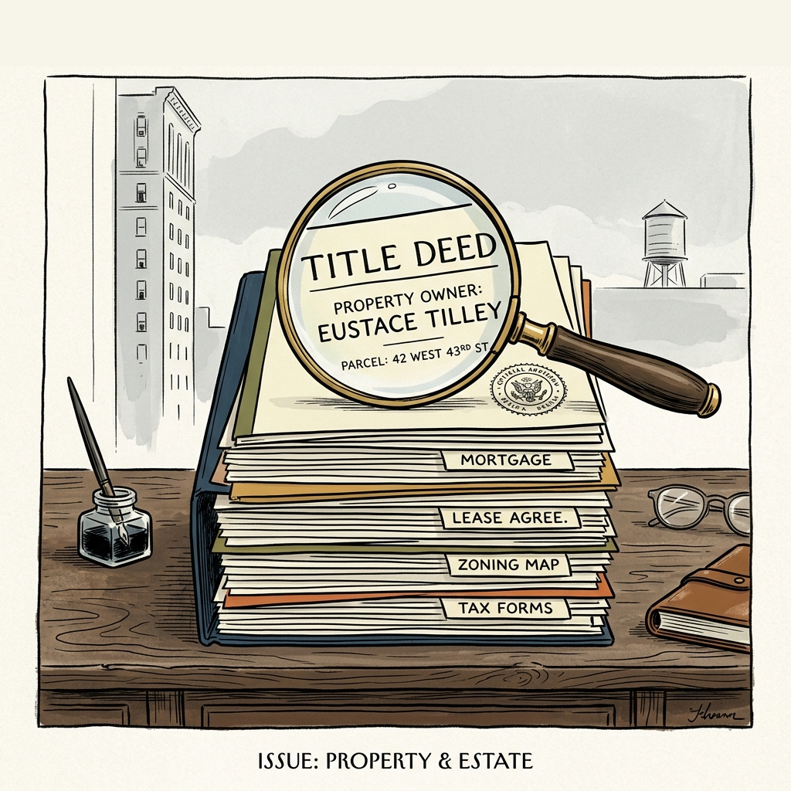
What Documents Do I Need for a Plot Loan?
A senior architect in Pune called us last quarter, mid-application. She had been working on her plot loan documentation for 6 weeks. The bank had aske...
What Is the Minimum Income Required for a Plot Loan?
A young software engineer in Hyderabad called us last quarter, three years into his career. He earned ₹95,000 net per month, had clean CIBIL of 745, a...
What Will My Plot Loan EMI Actually Be?
A senior product manager in Bengaluru called us last quarter, planning a ₹1.4 crore plot purchase. She had run her numbers through three different ban...
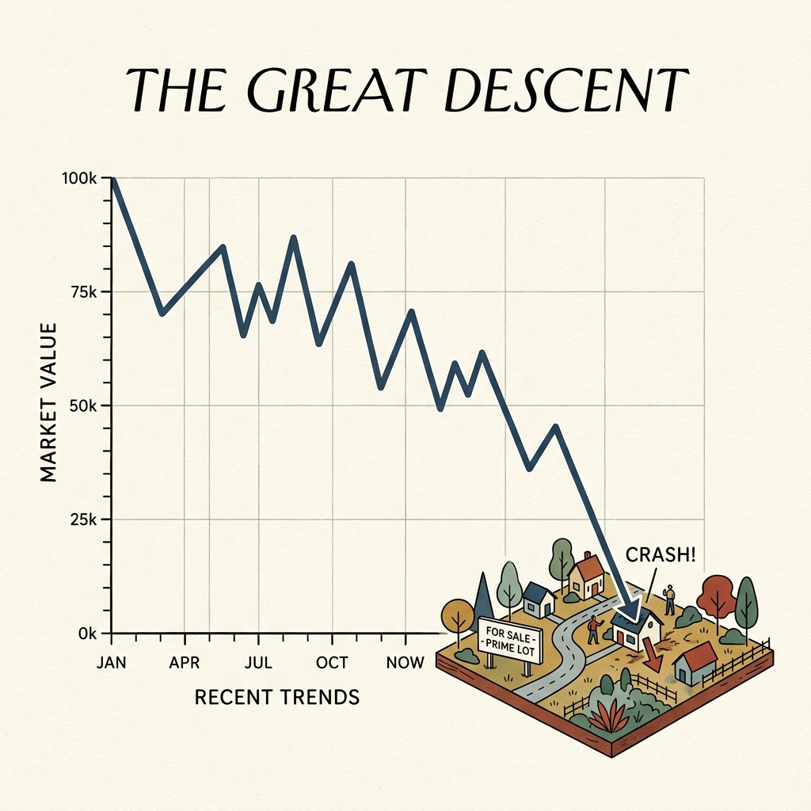
What Are the Current Plot Loan Interest Rates in India?
A senior consultant in Mumbai called us last quarter, comparing offers. He had pulled rates for his ₹1.85 crore plot loan from four bank websites — HD...
Plot Loan vs Home Loan: What's Actually Different?
A senior consultant in Bengaluru called us last quarter, building a comparison spreadsheet. He was choosing between buying a ready ₹2.4 crore apartmen...
Can I Get a Plot Loan at Age 22-25?
A 24-year-old software engineer in Bengaluru called us last quarter. He was 18 months into his first job at a major tech firm, earning ₹85,000 net per...
How Long Does a Plot Loan Take to Get Approved?
A senior accounts manager in Pune called us last quarter, mid-application. He had committed earnest money on a ₹1.3 crore Hinjewadi plot with a 60-day...
Personal Loan vs Plot Loan for Buying a Plot: Which Should I Choose?
A senior data scientist in Hyderabad called us last quarter. He had identified a ₹42 lakh plot in Shamshabad. He had ₹18 lakh in savings — enough for ...
Can I Get a Plot Loan for ₹15-20 Lakh? Is It Even Feasible?
A government employee in Indore called us last quarter. He earned ₹62,000 net per month, had clean CIBIL of 770, and had identified a ₹24 lakh plot in...
Can I Get a Plot Loan as a Single Earner?
A senior product manager in Bengaluru called us last quarter, navigating a complicated personal situation. She was 35, single, earning ₹4.2 lakh/month...
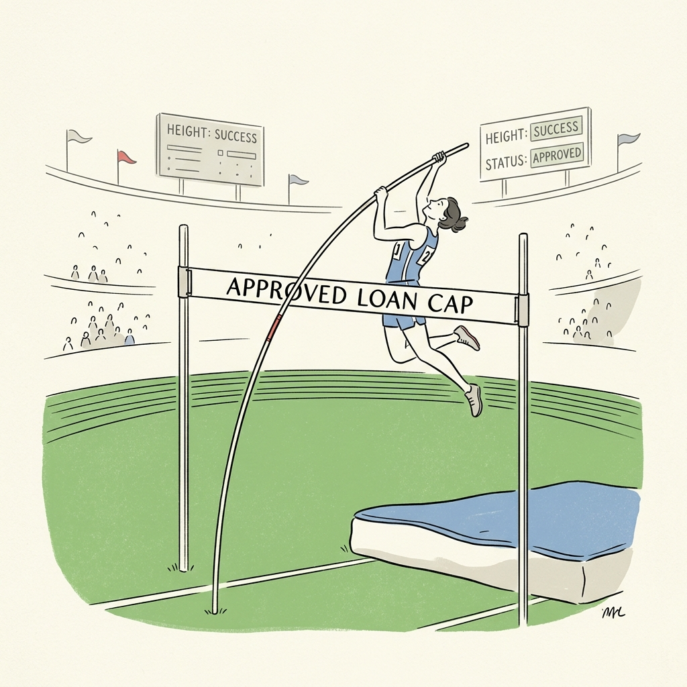
What's the Maximum Plot Loan Amount Banks Will Approve?
A senior banker in Mumbai called us last quarter. He had identified a ₹6.5 crore plot in Alibaug for a custom weekend home. He earned ₹15 lakh/month g...
Should I Add a Co-Applicant to My Plot Loan?
A senior consultant in Pune called us last quarter. He earned ₹3.4 lakh/month, had clean CIBIL, and had identified a ₹2.2 crore plot in Baner. His ban...
How Much Down Payment Do I Need for a Plot Loan?
A senior product designer in Bengaluru called us last quarter, mid-planning. She had identified a ₹1.6 crore plot in Sarjapur and assumed her ₹40 lakh...
My Plot Loan Application Got Rejected — What Next?
A senior consultant in Hyderabad called us last quarter, frustrated. He had applied for a ₹1.6 crore plot loan in Manikonda. After 7 weeks of processi...
Can I Take a Plot Loan While Financially Supporting My Parents?
A senior product manager in Bengaluru called us last quarter, navigating a difficult financial picture. She earned ₹2.8 lakh/month net but was sending...
What Happens If I Can't Pay My Plot Loan EMI?
A senior product engineer in Bengaluru called us last quarter, in genuine distress. He was 14 months into a ₹1.8 crore plot loan in Whitefield (₹1.65 ...
Can I Increase My Plot Loan Amount After Approval?
A senior consultant in Pune called us last quarter, mid-execution. He had received plot loan sanction of ₹1.05 crore from HDFC for his ₹1.5 crore plot...
How Does a Plot Loan Affect My Credit Score?
A senior data engineer in Pune called us last quarter, mid-application. He had a CIBIL score of 815 — built up over 10 years of clean credit card and ...
Should I Foreclose My Plot Loan Early?
A senior tech professional in Bengaluru called us last quarter, mid-decision. He had taken a ₹1.6 crore plot loan 4 years earlier, was 11 years from c...
Is Buying a Plot on Loan Actually Worth It?
A senior consultant in Mumbai called us last quarter, mid-deliberation. He had been considering a ₹1.8 crore plot in Karjat for 3 months. His friends ...
How Much Does Plot Value Actually Increase Over Time?
A senior product designer in Hyderabad called us last quarter, evaluating a ₹95 lakh plot in Tellapur. Her father (a retired banker) had told her "plo...
Can I Get a Better Plot Loan Rate by Switching Banks?
A senior business analyst in Pune called us last quarter, mid-cycle on her plot loan. She had taken a ₹1.4 crore plot loan from Bajaj Housing Finance ...
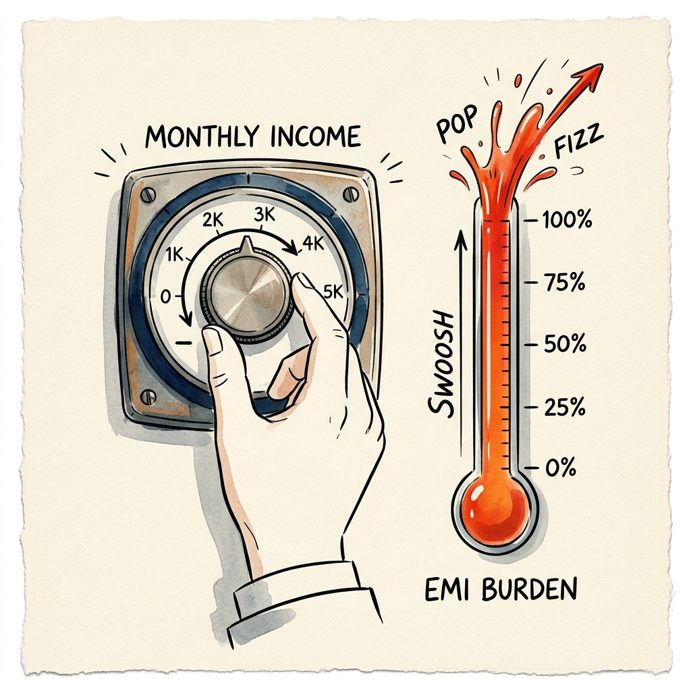
What Happens to My Plot Loan If My Income Changes?
A senior data scientist in Bengaluru called us last quarter, in the middle of a major career transition. She had taken a ₹1.6 crore plot loan 18 month...
Can I Borrow Against My Plot After Buying It?
A senior consultant in Mumbai called us last quarter. He had purchased a ₹2.4 crore plot in Lonavala 4 years ago using his own funds (no plot loan at ...
How Different Is the Plot Loan Process Across Banks?
A senior accounts manager in Hyderabad called us last quarter, mid-frustration. He had applied for a plot loan at HDFC three months earlier — process ...
Should I Buy a Plot in Cash or With a Loan?
A senior tech founder in Bengaluru called us last quarter, mid-decision. He had just received a substantial liquidity event from selling a small stake...
What Tax Benefits Can I Claim on Plot Loan Interest?
A senior consultant in Pune called us last quarter, mid-tax-planning. He had taken a ₹1.4 crore plot loan 16 months earlier. His tax advisor had told ...
Can I Get a Plot Loan for Land in My Hometown?
A senior tech professional in Bengaluru called us last quarter, planning ahead. She was earning ₹3.5 lakh/month in Bengaluru but had identified a 6,00...
Can I Qualify for a Plot Loan on ₹87,000 Monthly Income?
A young software developer in Pune called us last quarter. He earned ₹87,000 net per month at a mid-tier IT firm, had clean CIBIL of 760, and had iden...
Can I Take a Plot Loan Based on Future Expected Income?
A senior consultant in Mumbai called us last quarter. He was 31 years old, earning ₹2.8 lakh/month at a top consulting firm, and was on track for a pa...
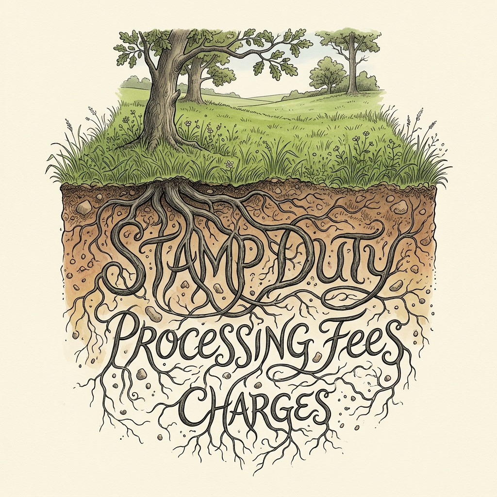
What Are the Hidden Costs in Plot Loans?
A senior product manager in Bengaluru called us last quarter, mid-budgeting. She had just signed a sanction letter for a ₹1.4 crore plot loan from HDF...
Plot Loans for Self-Employed: How Different Is It?
A senior practicing chartered accountant in Mumbai called us last quarter. He had been running his own practice for 8 years, with annual ITR averaging...
How Do Banks Actually Calculate the Maximum Plot Loan I Qualify For?
A senior product manager in Bengaluru called us last quarter, in pre-application research mode. She had used three different bank plot loan calculator...
Can I Use a Plot Loan and Then Build a House Later?
A senior consultant in Pune called us last quarter, deep into planning. He had taken a ₹1.6 crore plot loan from HDFC 14 months earlier. Construction ...
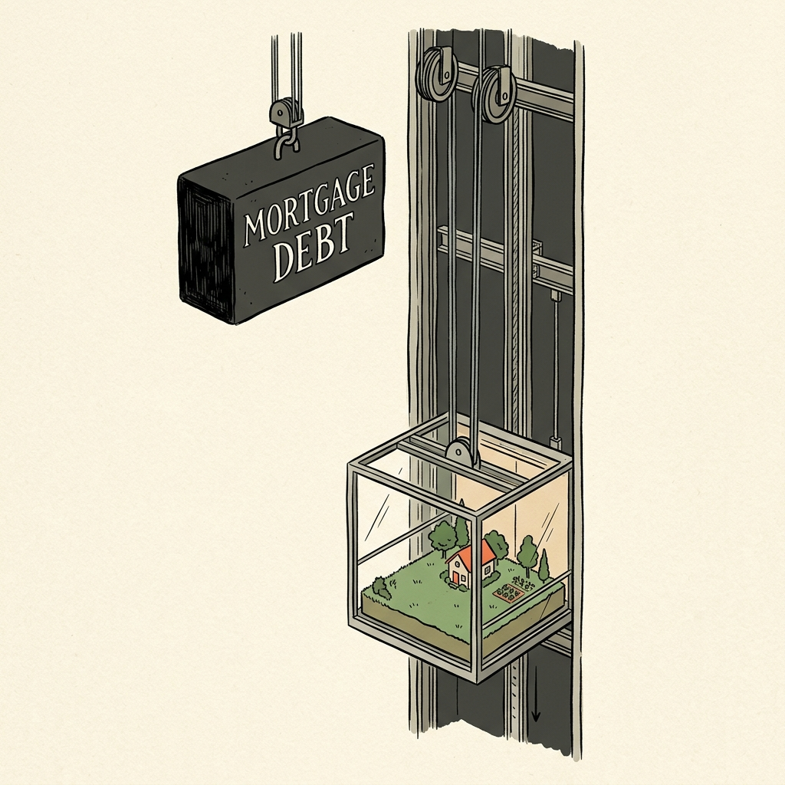
What If My Plot's Value Drops After I Take a Loan?
A senior tech leader in Bengaluru called us last quarter, anxious about market signals. He had purchased a ₹2.2 crore plot in Devanahalli area 18 mont...
Can Multiple People Take a Loan Together for One Plot?
Three siblings called us last quarter — two brothers in Pune (one tech professional, one consultant) and a sister in Bengaluru (also tech). They were ...
Plot Loan vs Investing in Stocks/Mutual Funds: Which Builds More Wealth?
A senior data scientist in Bengaluru called us last quarter, weighing alternatives. She was 33 years old, earning ₹3.8 lakh/month, with substantial sa...
How Do I Calculate EMI for My Plot Loan?
A young IT professional in Bengaluru called us last quarter, mid-budget planning. He had identified a ₹65 lakh plot in Hoskote and was running EMI sce...
Can I Take a Plot Loan Without Any Co-Applicant?
A senior business analyst in Pune called us last quarter. She was 34 years old, single, earning ₹3.6 lakh/month at a top consulting firm, with 815 CIB...
What's a Safe EMI-to-Income Ratio for Plot Loans?
A senior consultant in Mumbai called us last quarter. He earned ₹4.2 lakh/month and was considering a ₹2.6 crore plot in Karjat. The bank's eligibilit...
Can NRIs Take Plot Loans in India?
A senior product manager in San Francisco called us last quarter. He had been an NRI for 9 years (currently on EB-1 Green Card track), with stable US ...
Should I Take Fixed or Floating Rate on My Plot Loan?
A senior consultant in Bengaluru called us last quarter, mid-sanction. His ₹1.6 crore plot loan had been sanctioned at HDFC. The bank's relationship m...
When Does My Plot Loan Money Actually Get Disbursed?
A senior accounts manager in Pune called us last quarter, mid-purchase. He had a ₹1.4 crore plot purchase scheduled for registration in 12 days. His H...
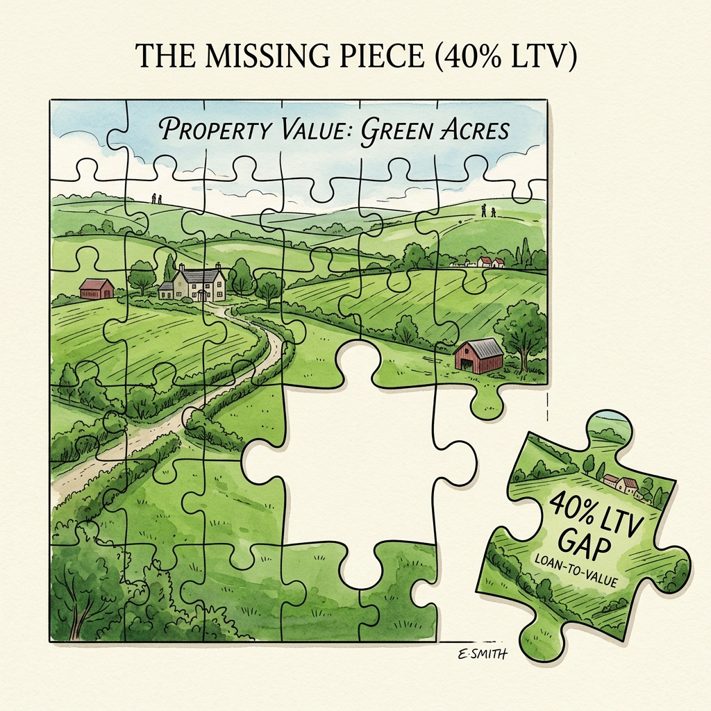
What Is the LTV Ratio for Plot Loans?
A senior product manager in Hyderabad called us last quarter. She had ₹95 lakh saved and was looking at a ₹3.2 crore plot in Tellapur. She had assumed...
Plot Loan for Commercial vs Residential: What's the Difference?
A senior business owner in Pune called us last quarter, weighing options. He was considering two plot purchases for very different purposes — a ₹1.8 c...
Plot Loan vs Construction Loan: What's the Difference?
A senior software architect in Bengaluru called us last quarter, mid-planning. He had purchased a ₹1.5 crore plot in Sarjapur 22 months earlier with a...
Agricultural vs Urban Plot Loans: What Can I Actually Buy?
A senior tech executive in Mumbai called us last quarter. He had identified two plot opportunities — a ₹2.4 crore residential plot in Lonavala (urban ...
NBFC vs Bank for Home Loans: Which One Is Right for You?
A senior finance professional came to us last quarter, mid-decision. He had two sanction letters in hand for a ₹2.8 crore home loan. SBI had offered 8...
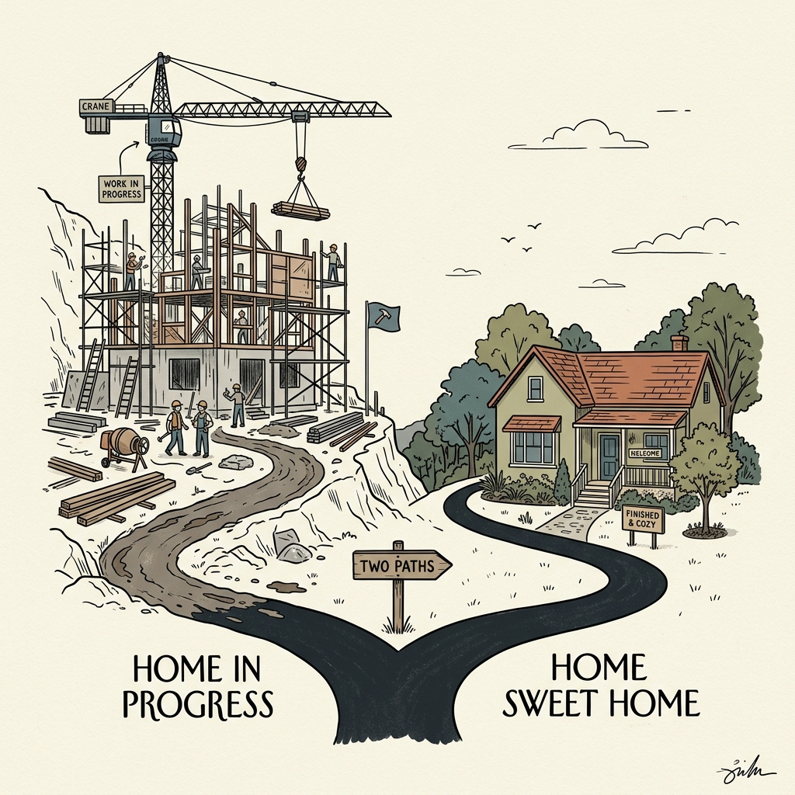
Construction Finance vs Ready Property Loans: What's Actually Different?
A senior product leader called us last quarter, mid-decision. He was looking at two ₹3.2 crore properties — an under-construction Lodha tower with pos...
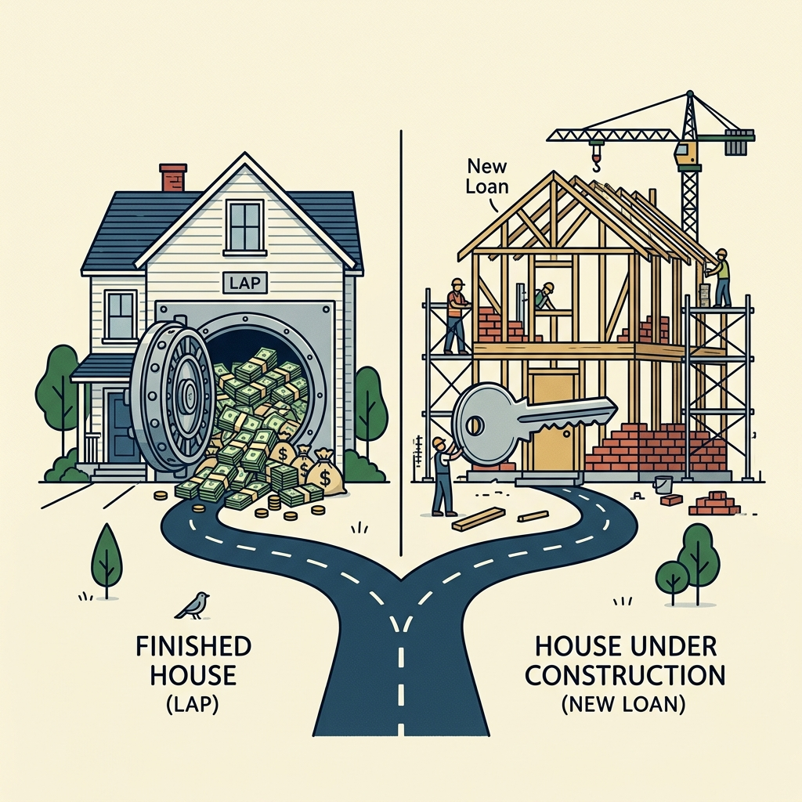
Loan Against Property (LAP) vs New Home Loan: Which One Should You Take?
A senior business owner came to us last month with a specific situation. He owned a ₹4 crore property in Worli (paid off, no existing loan) and was lo...
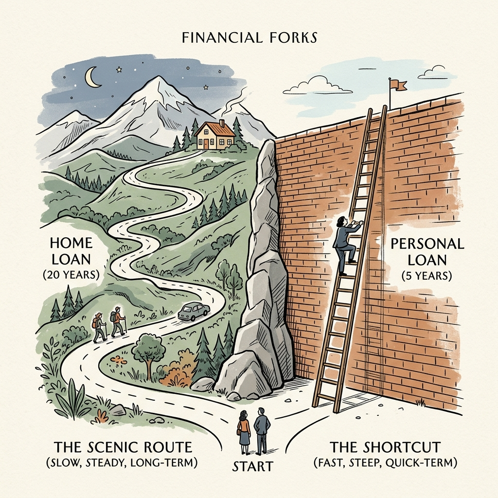
Home Loan vs Personal Loan for a Home Purchase: When Each One Makes Sense
A young finance professional called us last quarter, mid-decision. He was 27, eyeing a ₹85 lakh apartment as his first home. His bank had pre-approved...
What Happens to Your Home Loan When You Change Jobs?
A senior product leader called us last quarter, slightly anxious. He had a ₹2.4 crore home loan with HDFC, three years into the tenure. He had just re...
PMAY and Affordable Housing Schemes: What's Real, What's Hype, and Who Actually Benefits
A senior banker called us last quarter, slightly puzzled. He had just helped his domestic helper apply for a home loan in the helper's hometown in Utt...
Should I Take a Home Loan During Economic Uncertainty?
A senior product leader called us last quarter, openly conflicted. He had been planning a ₹3.2 crore home purchase for 18 months. His CIBIL was strong...
Online Home Loan Application Process: What's Real, What's Hype
A senior tech professional called us last quarter, mid-experiment. He had applied for a ₹2.4 crore home loan through a major private bank's "100% onli...
Home Loan for Rural vs Urban Properties: What's Different and Why It Matters
A senior consulting partner called us last quarter, mid-decision. Born and raised in a small Maharashtra town, he wanted to buy a 2-acre weekend prope...

GST on Home Loans and Property Purchase: What You Actually Pay
A senior product manager called us last quarter, mid-purchase. She was finalising a ₹3.5 crore under-construction property in Worli. The builder's inv...
Can I Get a Home Loan in India as an NRI?
A senior tech professional in Seattle called us last quarter, in the middle of a frustrating week. He had been Indian-born, US-resident for 11 years o...
How Much Home Loan Can I Get on My NRI Salary?
A senior product manager in San Francisco called us last quarter. She earned $245,000 base + $80,000 RSU vesting annually from a Big Tech employer. He...
What Documents Do I Need for an NRI Home Loan?
A senior consultant in London called us last quarter, slightly exasperated. He had been compiling documents for his ₹2.8 crore home loan application f...

NRI Home Loan Process: A Step-by-Step Guide
A senior banker in Singapore called us last quarter, two months into his ₹3.2 crore NRI home loan application. He had submitted documents, gotten pre-...

Is Getting a Home Loan as an NRI Harder Than for Indian Citizens?
A senior product manager in Toronto called us last quarter, slightly defensive. Her resident-Indian sister had just secured a ₹3.4 crore home loan in ...

What Are the Current Home Loan Interest Rates for NRIs in India?
A senior banker in Singapore called us last quarter, slightly confused. He had pulled NRI home loan rate data from four bank websites for a ₹3.4 crore...

Can I Get an NRI Home Loan While on H-1B Visa?
A senior software engineer in San Jose called us last quarter, anxious. He had been on H-1B for 6 years, his Green Card application was 4-5 years out,...

NRI Home Loan Rejected? Common Reasons and How to Fix Them
A senior consultant in Dubai called us last quarter, frustrated. He had been rejected by two Indian banks for a ₹3 crore NRI home loan despite earning...

How Long Does NRI Home Loan Approval Actually Take?
A senior tech leader in San Francisco called us last quarter, mid-application. He had been told by his bank's relationship manager that NRI home loan ...

Can I Buy Property in India Without a Home Loan as an NRI?
A senior partner at a US consulting firm called us last quarter. He had just received a substantial liquidity event — his stake in a small advisory pr...
What's the Maximum Home Loan Amount for NRIs?
A senior investment banker in London called us last quarter. He earned £450,000/year base + variable, was a Director at a Tier-1 bank, and was looking...

Can I Apply for an Indian Home Loan Without Visiting India?
A senior product manager in Sydney called us last quarter. Her job had just gotten busier with a major launch consuming the next 12 months. She wanted...

NRI Home Loan vs Loan Against Property: Which Should You Choose?
A senior fund manager in Singapore called us last quarter with a specific structuring question. He owned a fully paid-off ₹3.5 crore property in Pune ...

Can Self-Employed NRIs Get Home Loans in India?
A senior consultant in Dubai called us last quarter. He had quit his job at a Big 4 firm two years earlier to start his own management consulting prac...

Which Banks Offer the Best Home Loans for NRIs?
A senior product leader in San Francisco called us last quarter. He had just finished researching NRI home loans across 12 different bank websites for...

Is It a Good Idea to Buy Property in India as an NRI?
A senior tech leader in San Francisco called us last quarter — not for a loan, but for a candid second opinion. He had been considering a ₹4 crore Ben...

How Do I Verify My Income as an NRI Applying for a Home Loan?
A senior product manager in Boston called us last quarter, mid-application. The bank's credit officer had been asking the same question repeatedly for...

Can NRIs Get Home Loans on F-1 Visa or OPT Status?
A young professional in Boston called us last quarter. She was 24, on F-1 OPT after completing her MS at MIT, working in a tech firm earning $115,000/...

What Are the Hidden Costs of NRI Home Loans?
A senior banker in Singapore called us last quarter, mid-process. He was 9 weeks into his ₹3.4 crore Mumbai NRI home loan and had been carefully track...

How Much Down Payment Do I Need as an NRI?
A senior product leader in Singapore called us last quarter. She had identified a ₹4 crore Bengaluru property and was ready to apply for a home loan. ...

Can I Take a Home Loan in India While Still Living Abroad?
A senior product designer in Berlin called us last quarter, hesitant. She had been living in Germany for 7 years on EU Blue Card, planning to stay ano...

How Do I Calculate EMI for an NRI Home Loan?
A senior consultant in Dubai called us last quarter, frustrated. He had run his ₹2.5 crore loan numbers through three different bank EMI calculators o...

NRI vs Non-Resident: What's the Difference for Home Loans?
A senior research scientist in Boston called us last quarter, confused. He had been in the US for 14 years, originally on H-1B, then Green Card, then ...

Can NRIs Get a Home Loan for an Investment Property in India?
A senior product leader in San Francisco called us last quarter. He had bought a ₹3.2 crore Bengaluru property 4 years earlier (paid off 30% of loan v...

How Do Banks Verify My Bank Statements as an NRI?
A senior data scientist in Toronto called us last quarter, mid-application. The bank's underwriter had asked her to "explain certain entries" in her C...

My NRI Home Loan Was Rejected — What Should I Do Next?
A senior consultant in San Francisco called us last quarter, dejected. Her ₹3.6 crore Bengaluru home loan had been formally declined by HDFC Bank afte...

Should I Add a Co-Applicant or Guarantor to My NRI Home Loan?
A senior banker in Singapore called us last quarter, mid-decision. His ₹3.8 crore Mumbai loan application was being reviewed. His relationship manager...

How Do I Transfer Funds From My Foreign Bank to India for a Home Loan?
A senior consultant in London called us last quarter, mid-disbursement crunch. He needed to transfer £180,000 from his Barclays UK account to India fo...

What Tax Benefits Can NRIs Claim on Home Loans?
A senior tech leader in San Francisco called us last quarter, post-purchase. He had bought a ₹3.6 crore Bengaluru property 18 months earlier with a ₹2...

Should I Prepay or Close My NRI Home Loan Early?
A senior consultant in Singapore called us last quarter, mid-decision. He had been paying his ₹2.4 crore Bengaluru home loan EMI for 4 years (₹1.85 la...

What Credit Score Do I Need for an NRI Home Loan?
A senior software engineer in Toronto called us last quarter, anxious. She had been in Canada for 6 years and had a strong Canadian credit score (Equi...

How Does Currency Exchange Affect My NRI Home Loan Repayment?
A senior banker in London called us last quarter, mid-EMI cycle. He was 3 years into a ₹2.8 crore Bengaluru home loan. His monthly EMI was ₹2.42 lakh....

Can I Get an NRI Home Loan Without Any Indian Credit History?
A senior consultant in San Francisco called us last quarter, slightly worried. He had moved to the US 11 years ago, right after his Master's. He had n...

Pros and Cons of NRI Home Loans: An Honest Assessment
A senior researcher in Boston called us last quarter, in the middle of his decision. He had been researching NRI home loans for six weeks. His dilemma...

How Do I Choose Between Multiple NRI Home Loan Offers?
A senior product manager in Singapore called us last quarter, mid-decision. She had two NRI home loan offers in hand for her ₹2.7 crore Pune property:

NRI Home Loan Eligibility Checklist: Are You Ready to Apply?
A senior consultant in Toronto called us last quarter. He had been thinking about an Indian home loan for 18 months but kept procrastinating — "I don'...

What Happens to My NRI Home Loan If I Return to India Permanently?
A senior product manager in San Francisco called us last quarter, planning ahead. He had taken a ₹3.2 crore Bengaluru NRI home loan 4 years ago. Now h...

Can NRI Spouses Apply for a Home Loan Together?
A senior couple — both in tech, both in Boston — called us last quarter. He earned $245,000 base + RSU; she earned $190,000 + RSU. They were planning ...

Should I Get Pre-Approval for My NRI Home Loan Before Property Search?
A senior consultant in Singapore called us last quarter. He had been searching for properties in Mumbai for 3 months — visiting during a 2-week India ...

NRI Home Loan Scams — How to Recognise and Avoid Them
A senior product designer in Toronto called us last quarter, embarrassed. She had been chatting with what seemed like a "loan advisor" online for 3 we...
Don’t be Penny Wise, Pound Foolish: RSUs, Layoffs, and Home Loan Planning
Why relying on RSU appreciation and future salary is a risky strategy, and why you should always take the maximum sanctioned limit from the bank.
Can Self-Employed Professionals Get Home Loans in India?
A doctor running a successful clinic in Powai called us last month. Annual gross revenue: ₹3 crore. Personal cash flows: comfortable. CIBIL score: 790...

What Documents Do I Need for a Home Loan as Self-Employed?
There is a moment in every self-employed home loan journey that we have seen play out hundreds of times. The bank executive sends a checklist. The cus...
Home Loan Eligibility: How Much Can I Borrow on My Salary?
A senior product manager at a large tech company called us last week. Take-home: ₹3.5 lakh per month. He had run the EMI calculator on three bank webs...
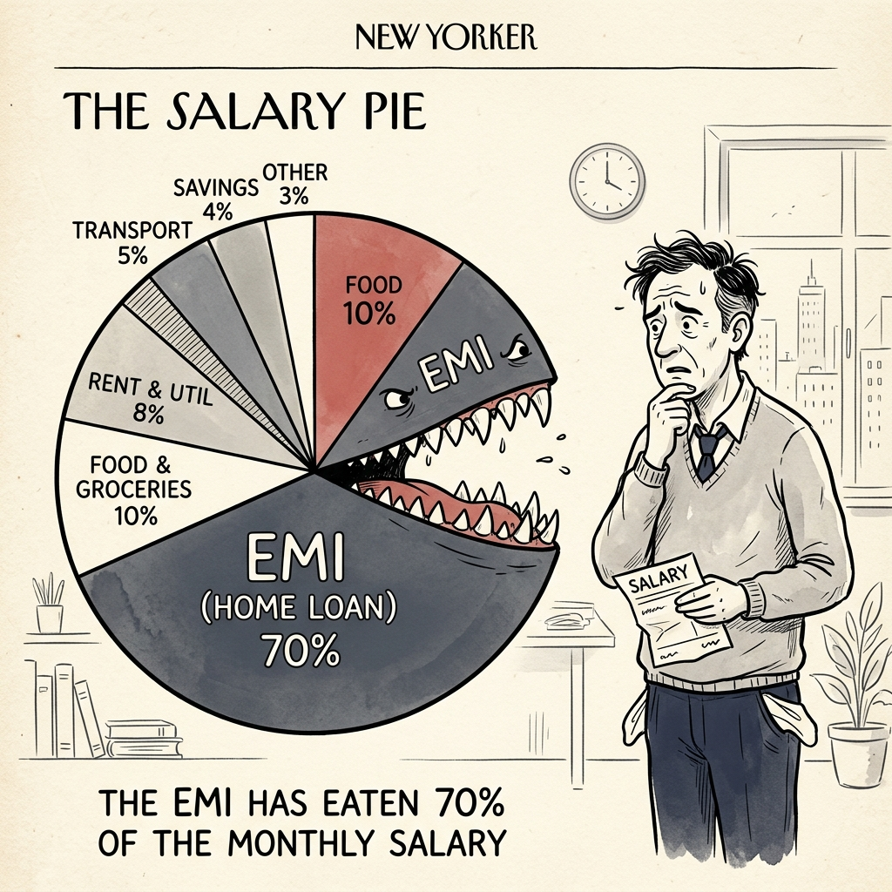
Is 70% of Salary Too Much for Home Loan EMI?
A founder of a mid-sized D2C brand asked me this question over coffee last month. He had been pre-approved for a home loan where the EMI worked out to...

What's a Safe Home Loan Amount Based on Net Worth?
A 38-year-old senior banker called us last quarter. Net worth: roughly ₹4.5 crore — split between mutual funds, EPF, ESOPs, and an inherited plot of l...

Should I Buy a House If Job Security is Uncertain?
A senior IT manager at a Tier-1 services company asked me this question recently over a Saturday afternoon call. He had been planning a ₹3 crore apart...

How to Get a Home Loan Without Job Loss Fears
I have noticed something in the last 18 months of advisory calls. Among salaried professionals — particularly in IT, BFSI, and consulting — almost eve...

What Happens to My Home Loan If I Lose My Job?
In March 2026, a story circulated widely on Indian social media. A Bengaluru software professional, identified only as "Rajesh," had been laid off in ...

Best Banks for Home Loans in India: A Real Comparison
A doctor in his early 40s called me last month. He had received four sanction letters — SBI, HDFC, ICICI, and Bank of Baroda — for the same ₹2.8 crore...

Why Is the HDFC Home Loan Process So Difficult?
If you have applied for a home loan in India in the last few years, there is a fair chance you have at least one HDFC story. The customer who got a sa...

How Long Does Home Loan Approval Take in India?
A senior director in a top consulting firm called us last quarter. He had committed to buy a ₹3.5 crore apartment with a 30-day registration deadline ...

Home Loan for IT Professionals: What Banks Actually Look For
For most of the last 15 years, an IT professional walking into an Indian bank for a home loan was the dream customer. Steady salary, top employer, pre...

Joint Home Loan for Married Couples: Benefits and Process
A married couple — both senior professionals — came to us last quarter for a ₹2.8 crore home loan. The husband had walked into one bank assuming his s...

Can I Get a Home Loan with Only 3 Years of ITR?
A founder of a 5-year-old D2C brand called us last month. Annual revenue: ₹18 crore. Personal cash flow: comfortable. He wanted a ₹2.4 crore home loan...

Home Loan Interest Rates for Women: Do You Actually Get Better Rates?
A senior tech professional and her husband came to us last quarter, evaluating sanction letters from three banks. She mentioned that one of her collea...

How Much Monthly Savings Should I Keep Before Taking a Home Loan?
A 35-year-old senior consultant came to us last month, ready to sign for a ₹2.5 crore home loan. Comfortable salary. Clean CIBIL. Decent down payment ...

What's the Ideal Age to Take a 25-Year Home Loan?
A successful 47-year-old founder called us last quarter. He had just exited his second business and was looking at a ₹4 crore apartment in BKC. The ba...

Can I Foreclose My Home Loan Early Without Penalty?
A senior banking executive came to me last quarter, frustrated. He had just received a bonus and wanted to fully prepay his ₹85 lakh outstanding home ...

Home Loan vs Renting: Which Actually Makes Financial Sense?
A senior product manager at a tech company called us last quarter. He had been renting a ₹4 crore apartment in Powai for ₹1.2 lakh per month for the l...
What Fixed Costs Should I Account for Before Taking a Home Loan EMI?
A senior consultant in his late 30s came to me last quarter, ready to commit to a ₹2.6 crore home loan. He had run the EMI calculator. He had worked o...

How to Calculate the Maximum Home Loan You Can Actually Afford
A management consultant called us last quarter, frustrated. He had run his numbers through five different home loan calculators online. Each one gave ...

Home Loan Application Rejected: What Are the Common Reasons?
A senior professional with a 790 CIBIL score, ₹2 lakh net monthly income, and 12 years at a top employer was rejected for a ₹1.5 crore home loan last ...

Does My Credit Score Actually Matter for Home Loan Approval?
A young software engineer called us last week. He had just checked his CIBIL score for the first time — 678. He was anxious. "Mangesh, can I still get...

Can I Get a Home Loan With Irregular Income?
A senior corporate lawyer left his big-firm partnership last year to set up his own boutique practice. Income on the firm's payslip — gone. Income fro...

What's the Debt-to-Income Ratio Banks Check (and Why It Limits Your Loan)
A senior IT manager came to us last quarter, frustrated. He had ₹4.5 lakh net monthly income, a 790 CIBIL, and 14 years at a Cat-A employer. He had wa...

Home Loan Documentation: The Complete Checklist (and What Most Borrowers Miss)
A senior engineering director called us last quarter, frustrated. He had been preparing his home loan documents for two weeks. Each time he submitted ...

Should I Take the Maximum Home Loan the Bank Offers Me?
A senior banker came to us last quarter. He had been pre-approved for a ₹3.8 crore home loan against his ₹4.2 crore eligibility cap. He was looking at...

How to Actually Negotiate Your Home Loan Interest Rate
A senior business owner came to us last month, slightly bitter. He had just taken a ₹3 crore home loan at 8.85%. His friend, with a similar profile at...

Floating vs Fixed Home Loan Rates: Which Should You Actually Pick?
A senior consultant came to us last quarter, mid-application. The bank had asked him to choose between a floating-rate home loan at 8.55% and a fixed-...

Home Loan EMI Too High: What Are Your Real Options?
A senior IT professional called us last quarter, openly stressed. He had taken a ₹2.4 crore home loan three years ago at 9.1%. EMI of ₹2.18 lakh. His ...

Can I Increase My Home Loan Amount After Approval?
A senior business owner came to us last month with an unusual situation. He had taken a ₹2 crore home loan three years ago. The property had appreciat...

What Hidden Costs Should You Know About Home Loans?
A senior product manager called us last quarter, irritated. She had taken a ₹2.8 crore home loan three months earlier. Her sanction letter showed a "p...

Is Home Loan Insurance (Mortgage Insurance) Actually Worth It?
A senior IT professional came to us last quarter, mid-loan-application. The bank had just sent her sanction letter — ₹3 crore at 8.55%. Tucked into th...

How Much Down Payment Do I Actually Need for a Home Loan?
A senior consultant called us last quarter, mid-property-search. He had been told by his bank that he needed "20% down payment" on a ₹3.5 crore proper...

Can I Buy a House Without a Home Loan? Should I?
A successful business owner came to us last quarter with an unusual question. He had just sold a portion of his business equity for ₹8 crore. He was l...

Home Loan for Startup Founders and Business Owners: The Real Map
A founder of a Series B startup called us last quarter, frustrated. His company was at ₹140 crore ARR, growing 80% YoY. He was earning ₹50 lakh in cas...

What to Do If Your Bank's Home Loan Process Is Slow
A senior consultant called us last quarter, openly frustrated. He had submitted his complete home loan file to a private bank 23 days earlier. The sel...

Home Loan Rate Lock: Should I Lock My Interest Rate?
A senior product manager came to us last quarter, mid-application. The bank had offered her two options on a ₹2.5 crore home loan:

How Tax Benefits on Home Loans Actually Work in India
A senior tech professional called us last quarter, mid-purchase. She had been told by her CA — "Take the home loan, you'll save ₹3.5 lakh in taxes eve...
SBI Maxgain vs Home Loan Overdraft: Why Liquidity is King
Understanding the "Curse of Knowledge" in the home loan industry. Why Overdraft products are a pseudo-savings hack that banks rarely explain properly to borrowers.
Is there a drop in Home Loans owing to white collar job uncertainty?
Analyzing the data vs. the anecdotes: How IT layoffs and AI-driven uncertainty are polarizing the Indian home loan market among high-salaried professionals.
Mint: Not seeing lower EMIs? Why you may need to act on your home loan
Analysis of RBI rate cuts and how they translate to borrowers in different banking sectors. Featuring insights from Mangesh Zope.

ET Prime: INR 10,000 Crore HDFC Credila deal: Why PE funds are upbeat
Why global private equity firms are betting big on the Indian education loan market and the edge NBFCs have over banks.